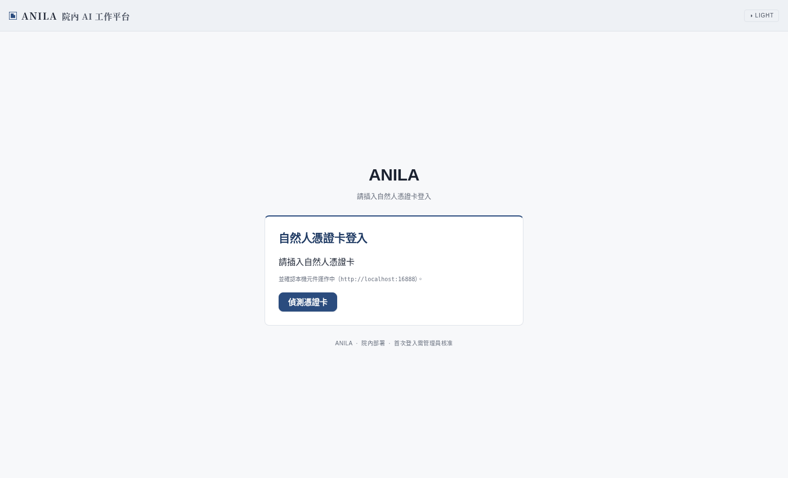
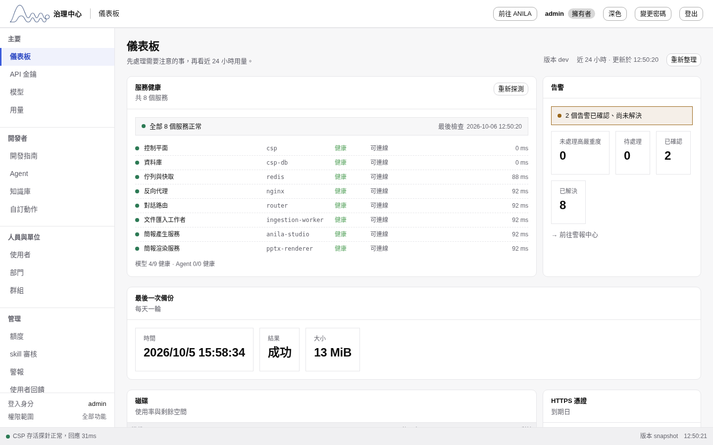
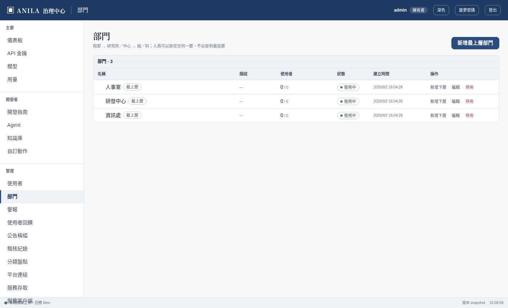
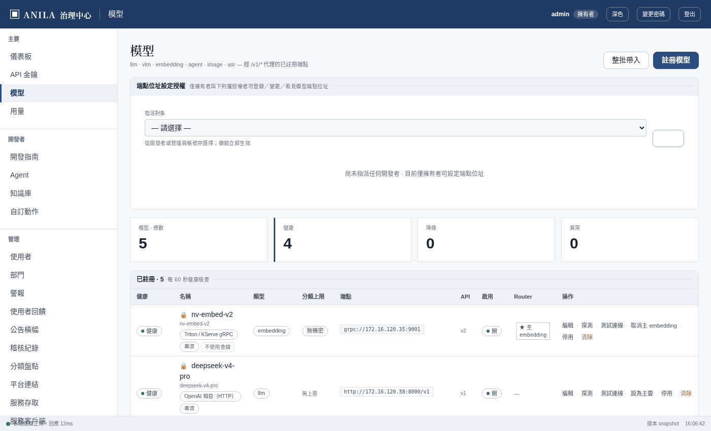
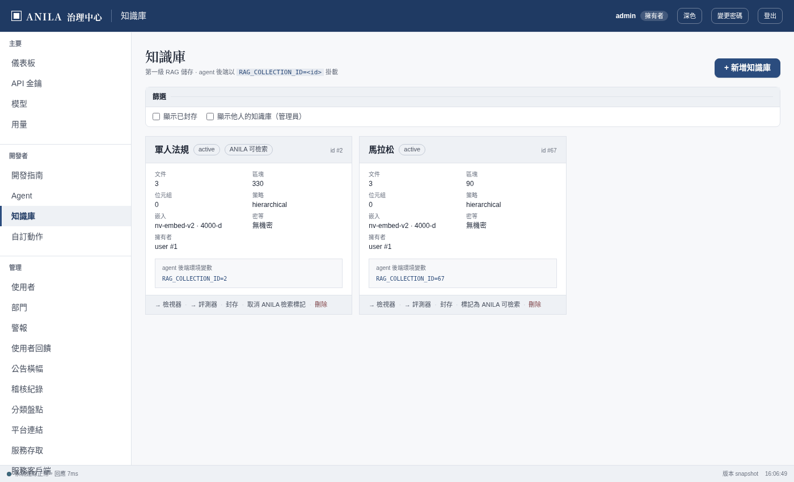
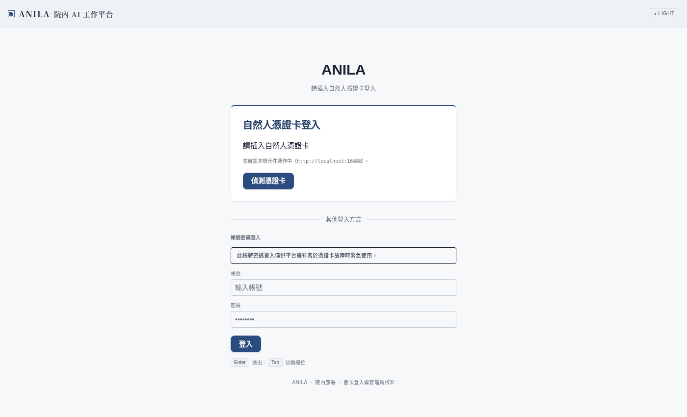

給內網平台主機的安裝與維運人員 · 平台版本 v1.0.1 · 2026-09-02
本手冊寫的是把 ANILA v1.0.1 出貨包裝上內網平台主機、驗證、之後維運的完整流程。它假設：
需要更深的細節（每一步的手動備援、歷史教訓）時，看第 14 節列的 runbook；本手冊是主線，runbook 是附錄。
版本規則：這條線從 2026-09-02 起以 v1.0.0 重新起算，之後修 bug 升 patch（v1.0.1）、加功能升 minor（v1.1.0）。舊線（2026-07 以前）的 v1.x／v2.x 全部是 legacy，號碼比較大不代表比較新，不要拿舊線的東西回來用。
| 元件 | 容器 | 做什麼 | 沒有它會怎樣 |
|---|---|---|---|
| 反向代理 | nginx | 唯一對外的 443；TLS、路徑分流（/ 治理中心、/anila/ 對話介面、/api、/v1）、關閉中的入口回「暫時維護中」。 | 全站打不開。 |
| 控制平面 | csp | 卡登驗章、帳號、單位、模型登記、稽核、治理中心網頁、資料面代理。 | 登入與治理全停。 |
| 資料庫 | csp-db（pgvector） | 所有資料，含規章向量。 | 全停。唯一要備份的東西。 |
| 佇列與快取 | redis | 文件匯入佇列、撤銷清單。 | 上傳不處理、登出不生效。 |
| 對話介面 | anila-ui | 同仁看到的畫面（靜態檔）。 | /anila/ 空白。 |
| 對話路由 | router | 分析問題、決定要不要查規章、派給哪個 agent、組合回答。 | 問問題回 503。 |
| 文件匯入 | ingestion-worker | 解析上傳的文件、切塊、算向量。 | 知識庫文件卡在處理中。 |
| 簡報 | anila-studio、pptx-renderer | 由對話產生簡報。 | 只影響簡報功能。 |
| 語音（選配） | asr-gateway | 麥克風輸入轉文字。gateway 在平台主機；解碼端是遠端的獨立服務，位址與協定填在治理中心「外部服務」（第 11 節）。 | 麥克風按鈕不出現。 |
| 附屬（預設關） | codeserver、n8n、anilalm | 開發與自動化工具、ANILA LM。nginx 對未開放的入口回 404 或「暫時維護中」。GitLab 已撤下，沒有 /gitlab。 | 無影響。 |
出貨包是 anila-YYYY.MM.DD-N.tar.gz（約 4 GB），由開發機 scripts/release/build-release.sh 從乾淨的 git HEAD建出來；版本是台北日期。解開後是一個目錄：
anila-YYYY.MM.DD-N/
├── anila-update.sh ← 安裝／更新／回復／認領
├── preflight.sh ← 主機預檢，不改任何東西
├── manifest.txt ← 版本、commit、每個檔案的 SHA256
├── manifest.sha256
├── images.tsv ← 映像清單與來源 digest（含 redis）
├── source.tar.gz ← 這一版 HEAD 的原始碼
├── compose/
│ ├── compose.yaml
│ └── platform.yml
└── images/ ← 每個映像一份 docker save 封存包裡沒有 .env、secrets/、憑證私鑰、備份。密鑰、憑證、JWT 都在內網主機上由 anila-update.sh 產生，放進 /opt/anila/state/，不進版本目錄。
打包時做三道檢查：① 工作目錄必須乾淨（不能用未提交的檔案建映像）；② 每個封存逐層掃描不得夾帶私鑰（含 redis 層，BEGIN … PRIVATE KEY 也算），已知的公開測試憑證例外；③ 產出後逐檔核對清單與 SHA256。任何一道紅就停。
| 要帶 | 從哪來 | 用在哪 |
|---|---|---|
| 出貨包資料夾（整個） | 開發機 build-and-export | 第 5 節載入 |
| 對應版本的 repo（程式碼與文件） | 同一個 tag 的 checkout 或壓縮檔 | compose 檔、nginx 設定、安裝腳本、本手冊都在裡面 |
server.pfx（平台網域的 wildcard 憑證＋私鑰） | IT／憑證管理單位 | nginx 的 https |
| 模型 gateway 的 API 金鑰 | 在模型主機上簽發 | .env 的 MODEL_GATEWAY_API_KEY |
| 擁有者的員工編號 | 擁有者本人 | CARD_INITIAL_OWNERS；這個員編刷卡直接是擁有者 |
| 正式單位清單 | 人事 | 第 7 節第一件 |
| 密碼管理器 | — | 安裝腳本產生的 8 把密鑰要存進去 |
絕不帶進內網：開發機的 .env、secrets/ 目錄、secrets/dev-card-ca/（假卡的測試 CA）、任何 CARD_* 的本機值。帶進去的話，平台會信任假卡，或者用開發機的密碼跑正式環境。
下表是開發機實測環境（本手冊的截圖與演練都在這台做），內網主機以此為下限對照。沒有量到的格子寫「未量測」，不寫估計值。
| 項目 | 開發機實測 | 說明 |
|---|---|---|
| 作業系統 | Ubuntu 22.04.5 LTS | 其他 Linux 只要 Docker 跑得起來即可，未在別的發行版驗證 |
| Docker Engine | 28.2.2 | 指令是 docker compose（v2），不是舊的 docker-compose |
| Docker Compose | 2.36.2 | 載入腳本與 compose 檔都以 v2 語法寫；2.36 的網路所有權語意已實測 |
| CPU | 24 核 | 平台本身負載很輕；本機語音解碼（CPU 版）是最吃 CPU 的元件 |
| 記憶體 | 62 GB | 全棧含語音在開發機上實際佔用未量測；不開語音時明顯更少 |
| 磁碟 | 映像 70 GB（含開發用映像）、資料卷 48 GB、容器 3 GB | 出貨包載入後的映像約 20 GB；資料卷隨對話與上傳檔案成長，資料放獨立分割區方便備份 |
| GPU | 無 | 平台主機不跑模型；語音解碼在別台，位址填在治理中心「外部服務」 |
| 網路 | — | 能連到模型主機的 443；內網 DNS 能解析平台網域與模型主機網域；防火牆只開 443 入向 |
| 時間 | — | NTP 同步。卡片簽章與登入權杖都看時間，時鐘偏差大登入會失敗 |
出貨包解開後，跑包裡的 anila-update.sh（第一次安裝與更新同一支）：
sudo tar -xzf ~/anila-YYYY.MM.DD-N.tar.gz -C /opt/anila
sudo bash /opt/anila/anila-YYYY.MM.DD-N/anila-update.sh /opt/anila/anila-YYYY.MM.DD-N先跑預檢，每一條 ✗ 都附要執行的指令，全綠再安裝：
sudo bash /opt/anila/anila-YYYY.MM.DD-N/preflight.sh ~/anila-YYYY.MM.DD-N.tar.gz腳本做這些事（順序固定，失敗自動回復）：
| 步 | 做什麼 | 你要做的 |
|---|---|---|
| 取鎖與核對清單 | 安裝根目錄取排他鎖、逐檔核對出貨清單與 SHA256 | — |
| 備份（更新時） | 停寫入服務、備份資料庫與檔案快照，記下備份時間與當時的 alembic 版本 | — |
| 解壓與載入映像 | 解到 /opt/anila 底下、docker load 後用清單的映像 ID 核對 | 看它全綠 |
| 準備目錄與密鑰 | 產 state/.env（5 把密鑰：SECRET_KEY、ADMIN_PASSWORD、CSP_DB_PASSWORD、CSP_APP_DB_PASSWORD、CODESERVER_PASSWORD，寫在 state/generated-secrets.txt）、JWT 金鑰、模型 CA、檔案所有權 | 把密鑰檔案抄進密碼管理器 |
| 啟動與健康檢查 | 先不起 nginx，內部健康檢查（含 CSP /health）過了才開入口 | 看第 6 節 |
問題不是固定序列：它依主機上已經有什麼決定要不要問。不要把一串固定答案 pipe 給它。
| 問題 | 什麼時候出現 | 怎麼答 |
|---|---|---|
image 包資料夾路徑 | 沒把路徑當參數 | 出貨包絕對路徑 |
重新從 pfx 抽取?(會覆蓋) | 憑證檔已存在（重跑時） | 首次安裝不出現；換憑證答 y |
server.pfx 路徑／pfx 密碼 | 需要抽憑證 | 路徑；空密碼直接 Enter |
保留現有 secret? | .env 已存在（重跑時） | 答 Y。答 n 會重生資料庫密碼，既有資料庫就連不上 |
偵測到預設 owner … 確定用這組? | 環境或 .env 已有員編 | 對就 y，不對就 Enter 讓它再問 |
CARD_INITIAL_OWNERS — owner 員工編號 | 上一題沒確認 | 可以留空（預設 ,＝沒有卡片擁有者，先用管理員密碼登入） |
ANILA_HOST_ANSWER（或互動輸入） | 非互動時用環境變數帶站台名稱 | 院內這台的名稱或 IP |
ANILA_UPDATE_ASSUME_YES=1 ANILA_HOST_ANSWER=anila.example.local \
sudo -E bash /opt/anila/anila-YYYY.MM.DD-N/anila-update.sh /opt/anila/anila-YYYY.MM.DD-Nanila，認領既有部署時沿用作業記錄），不用自己設。rollback、adopt）與每一步的判準見 docs/deploy/UPDATE.md。docker compose -p anila ps
# 期望：csp / csp-db / redis / nginx / router / anila-ui / ingestion-worker /
# anila-studio / pptx-renderer / asr-gateway 全部 healthy 或 running
# （解碼端不在這台，不會有 asr-decoder 容器）H=https://anila.ai.ncsist.org.tw
curl -sk -o /dev/null -w '%{http_code} %{content_type}\n' $H/ # 200 text/html 治理中心
curl -sk -o /dev/null -w '%{http_code} %{content_type}\n' $H/anila/ # 200 text/html 對話介面
curl -sk $H/health # {"status":"healthy",...}
curl -sk -o /dev/null -w '%{http_code}\n' $H/anilalm/ # 503 刻意關閉，正常
curl -sk $H/.well-known/jwks.json | head -c 80 # 要有 "keys"，回 500 = JWT 金鑰沒產用擁有者的卡刷進治理中心（網址根目錄）。不應有任何憑證警告；有＝憑證沒換到 wildcard 或 DNS 沒生效。

.env。
在內網主機上，模型的健康燈應該是綠的；不是綠的先查 MODEL_GATEWAY_API_KEY、模型主機 DNS 與 share/pki/model-ca.pem，不是平台本身。（開發機上這一格必然紅，因為連不到模型主機。）
前五件的共同點：漏掉不會有錯誤訊息，症狀出現在同仁開始用的那一刻。第六件會報錯，但錯在第一個問題。
擁有者刷卡進治理中心 → 部門 → 新增。擁有者進場不需要單位存在，所以這個順序才通。

.env 的 ADMIN_PASSWORD 只在擁有者帳號被建立的那一次被消費。帳號建好之後再改 .env，資料庫裡的密碼不會變，而且沒有任何錯誤訊息。要換密碼用治理中心 → 使用者 → 重設密碼。首次安裝時 .env 裡的值就是能登入的密碼，請存進密碼管理器。
anila-update.sh 的「準備目錄」那一步已產。漏掉的症狀是「起來了但登入炸」：/.well-known/jwks.json 回 500，登入發不出權杖，anila-studio 反覆重啟。金鑰在 /opt/anila/state/secrets/；補完重建 csp 並重載 nginx：
cd /opt/anila
sudo docker compose -f current/compose.yaml -f current/.anila-images.yml -p anila up -d --no-build --pull never csp
sudo docker exec anila-nginx nginx -s reload| 檔案 | 來源 | 去處 | 驗證 |
|---|---|---|---|
server.pfx | IT | infra/nginx/certs/server.{crt,key} | openssl x509 -in server.crt -noout -subject -dates → CN 是 *.ai.ncsist.org.tw |
| CSPKI CA bundle | repo 內建 | share/pki/model-ca.pem | echo | openssl s_client -connect <模型主機>:443 -CAfile share/pki/model-ca.pem 2>/dev/null | grep 'verify return code' → 0 (ok) |
secrets/dev-card-ca/ | 開發機 | 不進內網 | 內網主機上不該有這個目錄 |
ANILA_MODEL_CA_FILE 是「取代」整個信任庫，不是疊加：指到空檔或壞檔，csp 所有出向 https 全掛。先在主機上驗到 verify return code: 0 再交給容器。
治理中心 → 模型 →「註冊模型」，登錄模型主機的端點；再到同頁「模型角色」指定七個角色（主路由模型、平台嵌入模型、簡報模型、生圖模型、視覺模型、摘要模型、知識庫對話模型）。沒有主路由時，同仁問第一個問題就回「ANILA Router 無可用主路由模型」。

治理中心 → 知識庫 → 該知識庫的開關。新建的知識庫預設沒有標；沒標的話規章問答整個不存在，畫面看起來正常，模型憑印象編條號。

六件做完，用一張真的卡（不是擁有者）走一遍，每格留下產物（截圖或回應碼），不要只打勾：
| # | 做什麼 | 判準 |
|---|---|---|
| 1 | 同仁刷卡 → 註冊選單位 → 等待核准 | 治理中心 → 使用者「待審核」變 1 |
| 2 | 管理員核准 → 同仁再刷卡 | 進到 /anila/，左下顯示他的名字 |
| 3 | 問一題規章問題 | 答案上方有步驟清單，下方有「查看 N 筆來源」，來源側欄有檔名 |
| 4 | 問一題非規章問題 | 答案上方寫「本次未檢索院內規章」 |
| 5 | 上傳一份 PDF 到知識庫 | 狀態變 indexed；問它的內容答得出來 |
| 6 | 治理中心 → 用量 | 剛才的請求有記到 |
| 7 | 破窗（第 12 節） | /login?show_alternatives=1 出現帳密欄位，擁有者真的登得進去；記下登入後右上的角色 |
| 8 | 拔卡、關瀏覽器、重開 | 要重新刷卡才能進 |
第 3、4 項在同一個對話裡問，最能看出平台「查了」和「沒查」的差別。
每次更新都是一個新的出貨包（版本是台北日期 YYYY.MM.DD-N）。更新會自動先停寫入、備份資料庫與檔案，失敗自動回復；.env、secrets/、憑證、share/ 都在 state/，不會被蓋掉：
sudo tar -xzf ~/anila-YYYY.MM.DD-N.tar.gz -C /opt/anila
sudo bash /opt/anila/anila-YYYY.MM.DD-N/preflight.sh ~/anila-YYYY.MM.DD-N.tar.gz
sudo bash /opt/anila/anila-YYYY.MM.DD-N/anila-update.sh /opt/anila/anila-YYYY.MM.DD-N退回上一版是 sudo bash /opt/anila/anila-update.sh rollback（會先列出會消失的對話／訊息／文件筆數，打字確認才還原）。這台早有同名的 compose 專案卻沒有安裝記錄時，先用 ... adopt /opt/anila/versions/<目前版本> 認領。完整判準見 docs/deploy/UPDATE.md；更新後照第 6 節再驗一次。
更新後請同仁硬重新整理（Ctrl+Shift+R）。 還開著的舊分頁點下一頁時會去抓已經不存在的舊檔案，症狀是點了沒反應或畫面空白。發一則公告最省事（治理中心 → 公告橫幅）。
手動只重建單一服務時也要重載 nginx。 例如 up -d csp 之後全站 502、但 docker compose ps 每個都綠，就是這個。
改了 infra/nginx/anila.conf 要 up -d --force-recreate nginx，不是 restart：那個檔是單檔掛載，編輯器換了 inode 之後容器仍抓舊檔，沒有任何錯誤。
每天的備份由 compose 的 backup 服務做，不是 crontab，也不用再跑 backup-csp-db.sh：容器起來先備份一輪，之後每 24 小時一輪，寫到 state/share/backups/，保留 14 份每日、6 份每月。最後一次成功的時間顯示在治理中心儀表板；超過 36 小時或最近一輪失敗會發警報。
還原始於丟棄用的 Postgres 演練，核對列數，再談切回；還原前要先建 csp_app 角色，否則權限設定會靜默失敗。完整手順：docs/runbooks/csp-db-backup-restore.md。
wildcard 憑證到期換發後，用院內新憑證覆蓋 /opt/anila/state/certs/server.crt 與 server.key，重建入口（... up -d --force-recreate nginx）。自簽的臨時憑證只在沒有正式憑證時才簽。CSPKI CA 換代時更新 state/share/pki/model-ca.pem 並重建 csp。憑證是目錄掛載，重建就讀得到。
# 全停（asr-gateway 也一起停；解碼端不在這台，沒有要帶的 profile）
cd /opt/anila
sudo docker compose -f current/compose.yaml -p anila down
# 全起
sudo docker compose -f current/compose.yaml -p anila up -d --no-build --pull never
sudo docker exec anila-nginx nginx -s reloaddown -v 會刪掉資料庫。日常永遠不要帶 -v。
.env 的 MODEL_GATEWAY_API_KEY → up -d csp → reload nginx。CARD_INITIAL_OWNERS（只對之後第一次刷卡的人生效）。ANILA_TRACE_ENDPOINT）出貨預設是關的，而且 csp 目前沒有接收端；使用者看到的步驟時間軸走的是即時事件，跟這個無關。不要設這個變數。router-sessions（v1.0.2 起）；down 不會刪它，down -v 會。nginx 對 /codeserver、/n8n 若回 404，/anilalm/ 回「暫時維護中」（503），那是刻意的發行閘，不是故障，不要為它們動 nginx。沒有 /gitlab/。要開放 ANILA LM 時照 docs/runbooks/anilalm-release-gate.md。
瀏覽器的麥克風按鈕只會打平台主機的 /asr/，nginx 轉給本機的 asr-gateway。解碼（語音轉文字）不在平台這包裡：解碼端是遠端的一台服務，位址與協定填在治理中心「外部服務」；gateway 一定要在平台主機上跑。
| 情況 | 做什麼 | 備註 |
|---|---|---|
| 有解碼端 | 治理中心「外部服務」填語音那一筆（位址、協定、憑證）；位址若是私網 IP 或單一名稱，先加進「信任主機」 | gateway 隨平台啟動，docker ps 應看得到 anila-asr-gateway-1 |
| 沒有解碼端 | 不必設定 | 麥克風不出現 |
| 換解碼端 | 改治理中心那一筆 | gateway 在 ASR_DECODE_URL_TTL（預設 60 秒）內重讀，不用重啟 |
# 驗證 gateway 看到的解碼端
docker exec anila-asr-gateway-1 python3 -c \
"import httpx,json;print(json.dumps(httpx.get('http://localhost:8200/asr/health').json(),ensure_ascii=False,indent=2))"
# reason: ok = 健康；decoder_unreachable = 連不到；decoder_unauthorized = 金鑰錯（不要去查網路）協定填錯的症狀是「麥克風看起來正常，每句話都失敗」；解碼端被出向檢查擋下時麥克風不出現，gateway 日誌會有 blocked 的 reason。.env 裡若還留著舊的 ASR_DECODE_*，服務不會讀，刪掉即可。
card-only 模式關掉了帳密登入。如果讀卡元件或 CSPKI 出問題，所有人進不來，包括你。兩條路：
https://<平台>/login?show_alternatives=1，用擁有者帳密登入。後端只放行擁有者，其他人填了照樣進不來。.env 改 ANILA_AUTH_MODE=password → up -d csp → reload nginx → 處理完改回 card-only 再做一次。
| 症狀 | 原因 | 處理 |
|---|---|---|
| 全站 502，容器都綠 | nginx 拿著舊的容器 IP | docker exec anila-nginx nginx -s reload |
| csp 反覆重啟，日誌有 alembic | 資料庫遷移失敗 | csp 刻意拒絕半套啟動。看日誌那一條 migration，多半是資料庫版本超前或權限；還原備份再試 |
| 登入頁看得到帳密欄位 | ANILA_AUTH_MODE 不是 card-only | 改 .env → up -d csp → reload |
| 刷卡後「簽章驗證失敗」 | 卡片憑證鏈不在 CSPKI bundle 內，或時鐘偏差 | 確認是院內配發的卡；date 對時；假卡在正式機必然失敗，那是對的 |
| 登入成功但立刻被登出，jwks 回 500 | JWT 金鑰沒產 | 第 7.3 節 |
| 第一個問題回「無可用主路由模型」 | 沒設主路由 | 第 7.5 節 |
| 模型健康燈紅 | 金鑰、DNS、CA 三選一 | docker exec anila-csp-1 printenv MODEL_GATEWAY_API_KEY | wc -c（不能是 1）；getent hosts <模型主機>；第 7.4 節的 openssl 驗證 |
| 規章問答不查規章 | 知識庫沒標可搜尋，或沒有主 embedding | 第 7.6 節；模型頁要有一列「主 embedding」 |
| 上傳的文件一直「處理中」 | ingestion-worker 或 redis 掛了、嵌入模型連不上 | docker logs anila-ingestion-worker-1 --tail 50 |
改了 .env 沒生效 | 用了 restart | restart 不重讀 .env；要 up -d <服務>。確認：docker exec <容器> printenv 變數名，沒輸出就是沒進去 |
| 登入頁沒有憑證警告但同仁說有 | 同仁用 IP 或別的網域開 | 公告用正式網域；ALLOWED_HOSTS 與 nginx 的主機名清單要一起改 |
down 之後還剩容器 | 沒帶對 compose 檔 | 第 10.3 節 |
| 載入腳本說「這是演練包」 | 包的 Ref 不是乾淨 tag | 不要繞過。回開發機從乾淨 tag 重建出貨包 |
| 文件 | 內容 |
|---|---|
docs/deploy/INSTALL.md、docs/deploy/UPDATE.md | 第一次安裝、出貨包、更新與回復；出貨腳本 scripts/release/build-release.sh，主機預檢 preflight.sh |
docs/runbooks/csp-db-backup-restore.md | 備份排程、保留策略、還原演練 |
docs/runbooks/anilalm-release-gate.md | ANILA LM 入口的開關程序 |
docs/deploy/INSTALL.md | 把院內憑證放到 /opt/anila/state/certs/ 後重建 nginx |
docs/deploy/UPDATE.md | 版本是台北日期 YYYY.MM.DD-N |
docs/user-manual/admin.html、index.html | 管理員手冊、使用者手冊 |
docs/CURRENT-STATUS.md | 這一棵樹現在的實況；舊文檔去哪了也看這裡 |